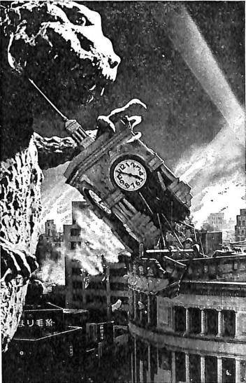

Le Retour d'un Iguanodon
Écologie et communisme I
Figurez-vous qu’ils reprennent, et ils le font systématiquement, la polémique en faveur d’un personnage que nous pourrions appeler préhistorique, comme l’iguanodon, l’ingénieur Amadeo Bordiga. — Togliatti, juillet 1953
À l’Est comme à l’Ouest, l’industrie produit de semblables dommages à l’environnement, liquide la vie dans les grands lacs, empoisonne l’atmosphère et la mer avec ses substances toxiques, construit des centrales nucléaires. Si l’on retrouve, ici et là, tant de traits semblables, la réponse en est extrêmement simple : c’est le même mode de production qui domine. La critique que Marx a faite du capitalisme, de ses effets désastreux pour la nature de cette partie de la nature qu’est la nature humaine – qui existe, n’en déplaise à certains philosophes –, s’applique aussi bien à la Russie qu’à l’Amérique.
Mais des gens éclairés et à l’esprit critique verront dans le culte marxiste de l’industrie, “livre ouvert des facultés humaines”, la cause de la situation dans des pays que, malgré tous leurs “défauts”, ils s’acharneront à appeler communistes. Vu la lourde expérience historique, on ne prendra pas au sérieux ceux qui prétendraient qu’il suffit de changer le mode de production pour en finir avec le saccage de la nature. Les préoccupations écologiques sont aussi bien au-delà du communisme que du capitalisme et, pour tout dire, de la société industrielle productiviste. À la croyance simpliste suivant laquelle il suffirait de révolutionner la base économique, on rétorquera que ce sont toutes nos manières d’être qu’il faut faire évoluer.

La vérité est au contraire que l’écologisme n’est qu’une autocritique de la société capitaliste et que, quelle que soit la virulence avec laquelle il dénonce telle ou telle pollution, il ne sait pas remonter et lutter contre le système qui produit ces pollutions et qui fausse déjà le problème des rapports entre l’humanité et son environnement en le prenant sous l’angle de la pollution ou de la défense de la nature. Vieux thème de droite que la gauche nouvelle, mais cependant toujours réformiste, reprend à son compte.
Partout se sont développées des villes de plus en plus monstrueuses, d’énormes agglomérations qui rassemblent des centaines de milliers et même des millions d’individus. À qui revient la palme ? À New York, à Shangai, à Tokyo ? La tendance à l’entassement n’est pas le fruit d’une nécessité technique inéluctable ou d’un irrépressible penchant humain pour l’attroupement. Durant des millénaires, l’humanité est restée dispersée. La densité démographique restant beaucoup plus faible que ne le permettait l’exploitation des ressources. L’existence des villes ne date pas d’aujourd’hui, mais leur gigantisme est lié à l’époque moderne, indissociable du mode de production capitaliste et de sa tendance congénitale à entasser, que ce soit sur le lieu de travail ou sur le lieu d’habitation, puisqu’il a aussi la manie de dissocier les deux d’une façon toujours plus accentuée. Loin de se rationaliser avec l’âge adulte, il a persévéré de plus belle. Ainsi, dans les dernières années, après la décolonisation, on a assisté à un spectaculaire gonflement, par des masses de paysans déracinés, des villes du tiers monde, sans que cela corresponde même à des possibilités d’emploi. Le libre citoyen, comme son frère le consommateur roi, n’a évidemment jamais eu son mot à dire dans l’affaire. Affaire qui détermine son mode de vie, les nécessités de sa consommation et sa vie politique. Une étude récente de la Délégation pour l’aménagement du territoire (DATAR) montre qu’une écrasante majorité de Français souhaiterait vivre en milieu rural ou dans de petits bourgs. Ce genre de souhait ou de nostalgie ne risque pourtant pas d’entraver l’exode rural ou de produire des programmes électoraux où l’on reconsidérerait de façon radicale la répartition de la population sur le territoire.
Une révolution communiste ferait d’abord l’économie d’enquêtes de ce genre – pas besoin d’alibi démocratique qui ne sert que quand ça va dans le sens où ça ne gêne pas le réalisme du capital –, mais prendrait des mesures interdisant toute construction supplémentaire dans les villes de quelque importance, et mettrait en place des circuits de retour vers les campagnes pour les déchets organiques. La pénurie endémique de logements serait réduite par l’exode urbain et par l’utilisation des locaux qui ne servent aujourd’hui qu’à des fonctions capitalistes et étatiques. La population pourrait se disperser et se recomposer en des ensembles plus restreints dans les zones actuellement dépeuplées en dehors des vacances. Cette redistribution se ferait aussi contre les frontières politiques. À l’heure actuelle, certains pays sont presque vides, alors que d’autres croulent sous leur population.
Les gens sont venus librement à la ville, et celle-ci n’est-elle pas le lieu par excellence de la civilisation, et ne procure-t-elle pas nombre de services qui ne pourraient plus être assurés avec un habitat dispersé ? Les paysans n’ont quitté les campagnes que forcés. Parce qu’ils ne pouvaient plus y assurer leur subsistance. La nécessité de gagner la ville s’est imposée à eux à travers l’environnement économique. Baisse des prix agricoles. Dissolution par la propriété privée du sol des liens communautaires. La question n’est pas de renvoyer leurs descendants à l’état dont ils sont sortis et qui, certes, avait ses défauts. Non pas retour à la nature ou à la campagne – c’est un mythe moderne qui est aussi irréalisable qu’il serait insatisfaisant –, mais fin de la séparation entre la ville et la campagne. Les services que procure la vie urbaine ne sont pour une bonne partie que des nécessités imposées par ce mode de vie. Certainement, l’humanité a dû attendre longtemps avant d’avoir le besoin du tout-à-l’égout. Le rôle social ou culturel de la ville n’est pas non plus le bon côté indépendant du mauvais côté de la vie urbaine. La ville, c’est un endroit où il y a tout à voir et rien à faire. Reconnaissons à la ville d’avoir joué un grand rôle dans la socialisation de l’espèce et aussi dans les mouvements révolutionnaires. Mais, aujourd’hui, d’une part les moyens modernes de communication et de télécommunication transforment de fond en comble cette question. Les gens n’ont plus besoin d’être entassés pour être reliés les uns aux autres. La technique serait encore plus adaptée pour opérer dans ce sens qu’en se sophistiquant pour permettre à des gens de vivre dans des conditions complètement artificielles. Aujourd’hui, l’agglomération qui s’est faite par addition de nombreuses couches concentriques éloigne l’homme de la nature, et c’est tout. On a déjà dit qu’il serait plus rationnel de développer l’habitat autour d’axes de transport. D’autre part, la ville ou plutôt l’urbanisation qui enserre et détruit la ville devient une entrave au contact entre les hommes. Les prolétaires sont déportés dans les banlieues et isolés dans leurs cages à lapins. Chacun est coupé des autres qui se présentent comme des sources de nuisance sonore ou des entraves à la circulation. L’urbanisation reproduit l’isolement campagnard en y ajoutant tous les défauts de l’entassement. Le principe bourgeois suivant lequel la liberté de l’un doit être sans cesse un obstacle à la liberté de l’autre s’y trouve inscrit dans le béton.
La fin de la séparation entre la ville et la campagne et de tout ce que ça représente comme misère et alimente comme gâchis fait traditionnellement partie de la persrective communiste et a été mis en avant par les utopistes. Marx et Engels, loin de l’enterrer au nom du réalisme scientifique, l’ont reprise. Engels écrivait dans La Question du logement : « La suppression de l’opposition entre la ville et la campagne n’est pas plus une utopie que la suppression de l’antagonisme entre capitalistes et salariés. Elle devient chaque jour davantage une exigence pratique de la production industrielle comme de la production agricole. » Marx écrit dans Le Capital : « Avec la prépondérance toujours croissante de la population des villes qu’elle agglomère dans de grands centres, la production capitaliste d’une part accumule la force motrice historique de la société ; d’autre part elle détruit non seulement la santé physique des ouvriers urbains et la vie intellectuelle des travailleurs rustiques, mais trouble encore la circulation matérielle entre l’homme et la terre, en rendant de plus en plus difficile la restitution de ses éléments de fertilité, des ingrédients chimiques qui lui sont enlevés et usés sous forme d’aliments, de vêtements, etc. Dans l’agriculture moderne, de même que dans l’industrie des villes, l’accroissement de productivité et le rendement supérieur du travail s’achètent au prix de la destruction et du tarissement de la force de travail. En outre, chaque progrès de l’agriculture capitaliste est un progrès non seulement dans l’art d’exploiter le travailleur, mais encore dans l’art de dépouiller le sol ; chaque progrès dans l’art d’accroître sa fertilité pour un temps, un progrès dans la ruine de ses sources durables de fertilité. Plus un pays, les États-Unis du nord de l’Amérique, par exemple, se développe sur la base de la grande industrie, plus ce procès de destruction s’accomplit rapidement. La production capitaliste ne développe la technique et la combinaison du procès de production sociale qu’en épuisant en même temps les deux sources d’où jaillit toute richesse : la terre et le travailleur » (4ème section, chapitre XV).
On a utilisé Marx et Engels pour couvrir l’accumulation du capital et la concentration du bétail humain en U.R,S.S., pour faire un éloge inconditionnel et répugnant du productivisme et de l’industrialisme, mais cela n’a pas entraîné la stérilisation de la capacité critique de tous ceux qui se réclamaient de leur œuvre. La réédition d’une série d’articles d’Amadeo Bordiga, écrits à une époque où le rapport entre le capitalisme, la technologie et la nature n’était pas encore de mode, le montre. En 1952, Bordiga écrivait : « L’âge capitaliste est plus chargé de superstitions que tous ceux qui l’ont précédé. L’histoire révolutionnaire ne le définira pas comme l’âge du rationnel, mais comme l’âge de la camelote. De toutes les idoles que l’homme a connues, c’est celle du progrès moderne de la technique qui tombera des autels avec le plus de fracas. »1 Depuis lors, le culte de la technique et du progrès en a pris un bon coup. Le désenchantement est général et les exploits spaciaux n’ont pu le sauver. Mais le culte de la nature que l’on ressort des oubliettes et qui prend la relève ne vaut guère mieux. L’âge de la camelote se poursuit jusque dans la promotion publicitaire du naturel qui sert à faire vendre et, au niveau de la société, à éviter la critique réelle. Le capital s’est caché derrière la science, l’affairiste derrière le technicien. Cela les protège encore : c’est la maudite technique, le criminel béton armé qui font violence à la nature.
Le culte de la nature prend le relais du culte du progrès comme refus de l’histoire qui porte le dépassement du capitalisme. Prend le relais, car l’idéologie du progrès, bien qu’elle exprime le dynamisme du capital, est, elle aussi, un refus de l’histoire. Le mouvement y est applaudi mais aussi réduit à la perpétuation du même, simplement de plus en plus confortable et de mieux en mieux outillé. Pas plus que l’idéologie du progrès, celle de la nature ne prend en compte les besoins et les nécessités de la nature humaine. Elle voit plutôt, avec défiance, dans l’homme une source de pollution qu’il conviendrait de soumettre à un autre ordre que le sien propre. C’est la même peur de l’histoire, le même refus de la nature humaine qui tantôt prend une allure conquérante et tantôt défensive. Elle est incapable de comprendre l’histoire comme mouvement de la nature humaine et cette nature comme nature historique.
Les articles de Bordiga sont aussi remarquables par la manière dont ils sont écrits. Certains trouveront que c’est un ton bien naïf. Ils goûtent le style littéraire, ce vocabulaire technique qui fait si sérieux ou alors la référence au vécu personnel qui se fait accepter parce qu’il n’a pas de prétention. La naïveté de Bordiga va de pair, colle avec cette critique ardente de ce monde bourgeois qui met toujours en avant l’expert, le spécialiste et leur prétendue neutralité.
Il n’est de couillonnade, si vaste soit-elle, que la technique moderne ne soit prête à avaliser et à recouvrir de plastique virginal, lorsque cela correspond à la pression irrésistible du capital à ses sinistres appétits.
Le grand rôle historique et véritablement progressiste du capitalisme reste d’avoir développé cette technique et accru de façon considérable les possibilités d’intervention et de connaissance par l’homme sur son environnement et sur lui-même. Nous ne voulons pas faire tourner la roue de l’histoire à l’envers. La révolution transformera profondément le sens du développement technologique et les conditons de production, mais elle n’est possible que sur la base du développement atteint par les forces productives. Le mal n’est pas dans la technique, ni même dans le gigantisme des installations, même si le capitalisme inscrit dans les instruments et les structures de production la dépossession de l’activité humaine.
Le développement du capital, c’est la faim de surtravail. Le machinisme n’est pas un moyen de développer les possibilités de l’espèce et d’alléger ses peines, mais de mieux faire rendre et mieux asservir le travailleur. Cela se traduit dans des économies sur le capital constant au détriment des conditions de travail et de sécurité du capital variable, c’est-à-dire des prolétaires. L’usine est le lieu de la concentration et de l’asservissement du producteur. Par là, elle a permis d’augmenter considérablement l’efficacité du travail humain. Mais même de ce point de vue le développement technique lui-même permet de passer au-delà.
Les formes de production les plus modernes, qui utilisent des réseaux de stations de tout genre, comme les centrales hydro-électriques, les communications, la radio, la télévision, donnent de plus en plus une discipline opérationnelle unique à des travailleurs répartis en petits groupes à d’énormes distances… Quand, après avoir écrasé par la force cette dictature chaque jour plus obscène, il sera possible de subordonner chaque solution et chaque plan à l’amélioration des conditions du travail vivant, en façonnant dans ce but ce qui est du travail mort, le capital constant, l’infrastructure que l’espèce homme a donné au cours des siècles et continue de donner à la croûte terrestre, alors le verticalisme brut des monstres de ciment sera ridiculisé et supprimé, et dans les immenses étendues d’espace horizontal, les villes géantes une fois dégonflées, la force et l’intelligence de l’animal-homme tendront progressivement à rendre uniforme sur les terres habitables la densité de la vie et celle du travail ; et ces forces seront désormais en harmonie, et non plus farouchement ennemies comme dans la civilisation difforme d’aujourd’hui, où elles ne sont réunies que par le spectre de la servitude et de la faim.
Le béton est mis en accusation. Mais pas plus que le plastique, par exemple, il n’est l’ennemi en soi. La hauteur des gratte-ciel qui ont fleuri dans les villes n’est pas imputable à ce matériau qui précisément permettrait de rompre avec les contraintes qui pesaient sur la construction en pierre. Le verticalisme a été initialement le résultat de la superposition des matériaux traditionnels. Aujourd’hui, il prend des allures démentes parce que la logique de la construction capitaliste fait monter les prix des terrains et conséquemment ce qui pousse dessus. Les dépenses de sol, achats de terrains et sous-bassements pour soutenir le poids de constructions monstrueuses l’emportent sur la construction proprement dite. Le verticalisme entraîne tout un tas de dépenses supplémentaires d’appareillages fonctionnant généralement assez mal, comme les ascenseurs, la climatisation. La distribution de l’eau ou du chauffage en est compliquée. Si l’on utilisait autrement les capacités du béton, sa résistance et sa plasticité, « on verrait jaillir des structures et des membrures mouvementées, courbées, élancées, à sections variables, d’une fécondité sans limites. Les saillies, les encorbeillements qui, réalisés par l’ancienne maçonnerie avec des pierres de taille, suscitent dans les monuments célèbres l’émerveillement des spectateurs, comme dans la description de Notre-Dame de Paris par Victor Hugo, fleuriraient avec facilité et nouveauté du flanc des constructions : des arcs audacieux et fins deviendraient possibles, de nouvelles silhouettes surgiraient comme par enchantement ». Sans être un criminel, le béton armé n’en est pas pour autant un petit saint. Il a ses défauts : c’est un mauvais isolant et surtout l’extraction des graviers n’est pas sans dommages pour le lit des rivières, et la production de ciment consomme beaucoup d’énergie. Si l’on en fait un usage modéré, en l’utilisant simplement pour les ouvrages où il est utile, cela ne posera pas de grands problèmes.
Le monde capitaliste est à la fois celui de l’entassement et de l’individualisme exacerbés, comme il engendre le dépeuplement et même la désertification de larges territoires pour ensuite s’acharner à économiser le précieux espace dans ses zones urbaines. Il y a les humanisateurs et les artistes de l’entassement, tel le célèbre Le Corbusier, pour lequel « l’espace est plus précieux que l’uranium ». Pour Bordiga : « Nous en sommes toujours là : plus on voit d’individus entassés par milliers et par millions dans des clapiers puants, des abattoirs militaires, des casernes et des prisons, plus on en voit réduits en bouillie, à cause de leur concentration même, par les bombes atomiques ou non, et plus l’adoration pharisienne de l’Individu répand son infection. »
L’humanité n’a jamais disposé d’autant de force, et pourtant elle se révèle démunie face aux cataclysmes naturels. Plus vulnérable même que par le passé aux crues des fleuves et aux tremblements de terre : densité accrue, fragilité des habitations qui n’en sont pas pour autant légères quand on les reçoit sur la tête. Avant, on se donnait la peine d’entretenir les digues. Aujourd’hui, il n’est pas si rentable que ça d’entretenir, mais qu’une catastrophe survienne et les entreprises sous la protection de l’État sauront la transformer en or. Ces cataclysmes naturels ne sont d’ailleurs pas forcément étrangers à l’action de l’homme qui déboise et met en l’air les régulateurs naturels.
Le fleuve immense de l’histoire humaine a lui aussi ses crues irrésistibles et menaçantes. Lorsque le flot s’élève, il mugit contre les deux digues qui l’enserrent. À droite, c’est la digue conformiste, pour la conservation des formes existantes et traditionnelles – un passage continu de prêtres psalmodiant en procession, de flics et de gendarmes en patrouille, de maîtres d’école et de charlatans débitant les mensonges officiels et la scolastique de classe. À gauche, la digue réformiste : s’y entassent les membres des partis “populaires”, les professionnels de l’opportunisme, les parlementaires et les chefs des syndicats progressistes. Échangeant des injures de part et d’autre du courant, les deux cortèges prétendent posséder la recette pour faire en sorte que le fleuve puissant continue son cours réprimé et forcé. Mais aux grands moments de l’histoire, le courant brise toutes les entraves, sort de son lit et “bondit”, comme le Pô à Guastalla et au Volano, dans une direction inattendue, emportant les deux bandes sordides dans la vague irrésistible de la révolution, renversant les digues de toute sorte, et donnant à la société comme à la terre une face nouvelle.2
Non seulement la technique prostituée au capital n’arrive pas à prévenir les cataclysmes ou à en limiter les dégâts, mais elle participe elle-même à la création de nouvelles catastrophes. Des études raffinées permettent d’économiser les matériaux nécessaires à la fabrication de navires, avions, automobiles, pour mieux mettre l’accent sur le décorum ou la vitesse au détriment de la résistance et de la sécurité.
Le capital se dépasse lui-même avec les centrales nucléaires puisqu’il est vrai que « le capitalisme ne veut toujours pas s’arrêter et, en fait, dans ce domaine comme dans tous les autres, il ne le peut pas. C’est même ce phénomène très important qui le définit. » Le nucléaire présenterait des dangers sérieux pour le présent, même si le risque d’accidents graves était écarté : problème des déchets radioactifs et de la dissémination du plutonium, augmentation de la radioactivité ambiante. Ses conséquences à long terme sont difficilement réversibles. Certains voient derrière le développement du nucléaire un moyen pour le capitalisme et l’État d’assurer leur pérennité à tout prix, une folie de technocrates mégalomanes. On peut se contenter d’y voir une manifestation de son besoin sans cesse croissant d’énergie et aussi, non pas un dépassement technologique démoniaque, mais une incapacité à transformer son type de développement, alors même que ça lui devient une nécessité. La question sociale ne peut se résumer dans le problème nucléaire. Là se projette aussi une peur idiote de la technique et un anti-étatisme confus. Il est absurde de croire que c’est une machination de l’État policier pour se renforcer et dément de penser que si jamais le nucléaire passe la révolution ne pourra plus passer. Récemment nous a été montré ce que valent les vérités et les garanties de l’État avec l’accident de la centrale de Harrisburg en Pennsylvanie (États-Unis), où est arrivé ce qui était présenté comme tout à fait improbable. Et aussi ce que vaut le mouvement écologique ; à Malville, son incapacité à élaborer une stratégie contre l’État. L’écologisme ne peut être qu’une pression qui poussera à renforcer les mesures de sécurité mais ne fera pas renoncer à une source d’énergie comme le nucléaire. Ce qui est montré, c’est que la solution d’un problème partiel comme celui-ci dépend d’un mouvement révolutionnaire. Le néo-réformisme a le choix : ou il en appelle directement à l’État comme le féminisme sur la question du viol et cela ruine toutes ses prétentions révolutionnaires et son identité, ou il est en opposition à l’État comme l’écologisme à propos du nucléaire et il reste impuissant.
Par quoi pourrait-on remplacer le nucléaire ? Il y a des gens qui sont pour la réouverture des mines de charbon sans pour cela qu’ils s’inscrivent d’ailleurs à l’embauche. Des esprits inventifs et positifs, quand même plus sympathiques, proposent des techniques “douces et alternatives”. C’est poser le problème à l’envers et rentrer dans le jeu de cette société. On produit déjà largement, suffisamment d’énergie. Le problème du remplacement, au moins dans les pays industriels, se pose à l’égard de sources d’énergie déjà existantes, parce que polluantes, parce que gâchant un patrimoine limité. Non dans l’optique d’un accroissement qui serait inévitable, alors qu’il s’agit de stabiliser et de réduire la production d’énergie, en entendant par là la production d’énergie comme processus autonome.
Parce qu’il ne sera pas guidé par le profit et organisé en entreprises libres ou étatisées, le communisme pourra être et sera un mode de production écologique. Il fera peut-être des faux pas, mais il n’introduira pas de façon systématique et aveugle des déséquilibres dans les cycles naturels, comme le fait le capitalisme. Il n’est pas la correction des lois économiques suivant des critères écologiques, mais le dépassement de la loi de la valeur et de l’économie. Ce que met en avant la crise écologique, c’est la nécessité de ce dépassement, le caractère devenu absurde socialement de la loi de la valeur qui écrasait déjà l’existence des travailleurs pour augmenter à tout prix la productivité du travail. La rentabilité capitaliste va de pair avec une accentuation systématique des économies en temps de travail indépendamment du coût pour le travailleur et la nature. Rentabilité qui est à court terme, le cycle de la valorisation du capital l’emportant sur le cycles et équilibres naturels et l’économie de ressources rares. On dilapide en quelques décennies des matériaux fossiles qui sont le produit de centaines de millions d’années.
Le communisme n’est pas une société de la mesure et de l’épargne. Disposant d’une très haute productivité, qu’elle peut encore accroître quand les conséquences n’en sont pas nocives à termes, elle pourra essayer, jeter, gâcher à grande échelle. Tout le problème étant de savoir ce que l’on rejette. Faire le contraire de cet univers de constipés et de radins où l’on se débarrasse de quantités fantastiques de déchets qui ne se recyclent pas. Avec une productivité élevée et la fin de la production pour la production, la question de l’économie de ce qu’on produit est supplantée par la nature de ce qu’on produit : non pas tant épargner que de produire du non-épargnable. Prodigalité de biens peu coûteux mais orientation impérative de la production pour éviter des effets irréversibles ou difficilement réversibles. L’humanité communiste agira sur la nature de façon plus intense que ne le fait le capital lui-même. La différence est qualitative, dans la nature de ses interventions.
Bordiga a eu l’immense mérite de tenir sur des positions antiproductivistes, anticonsommationnistes et antitechnicistes dans les années 50. Toutefois, il a tendance à mettre l’accent sur l’affairisme, la course au profit, des mécanismes économiques et leurs effets immédiats, la tendance à économiser à tout prix qui provoque des catastrophes, plutôt qu’à démasquer la nature anti-écologique du phénomène économique lui-même ainsi que les problèmes que cela finit par susciter pour l’expansion capitaliste. Ce n’est pas tant que le capital abuse de la rentabilité, c’est son mode de rentabilité lui-même qui est en cause.
La crise actuelle, à la fois écologique, économique et sociale, rend plus facile et plus urgent à saisir le lien entre accumulation capitaliste et dégradation de l’environnement. Cette nouvelle jeunesse que le capital s’est accordée après la Seconde Guerre mondiale n’a été possible que sur la base d’une négation systématique des nécessités écologiques. Non pas des accrocs ici ou là, mais une pression générale et sans cesse accentuée qui, si elle se poursuivait, ne pourrait entraîner qu’une catastrophe globale. D’où des réactions au sein même des défenseurs du système.
La montée des problèmes écologiques et de la crise sociale a engendré une fausse critique dont la préface du Parti communiste international à la réédition de Bordiga nous dit : « L’écologisme regroupe donc pêle-mêle une réaction – réactionnaire ! – au bouleversement incessant des techniques productives par le capital, une défense contre l’exaspération du capitalisme qui rend la vie toujours plus pénible, et aussi la réaction de la bourgeoisie contre ses propres “excès”, sa tentative de contrôler et de limiter ses destructions anarchiques. ». Cela reste très insuffisant. L’écologisme ne peut être réduit à une coalition hétéroclite d’intérêts dérangés par la montée des nuisances et qui auraient en commun leur myopie, leur impuissance et leur caractère défensif, sinon réactionnaire. L’écologisme doit être compris en fonction du mouvement de la révolution et de la contre-révolution. Le capital doit, autant que cela lui reste possible, opérer une critique sans se remettre évidemment fondamentalement en cause, pour entraver le communisme quand la profondeur de la crise tend à mettre celui-ci à l’ordre du jour. Au travers de l’écologisme, malgré sa cécité et sa confusion, le système tente, d’une façon encore essentiellement idéologique, d’élaborer des solutions3.
-
Espèce humaine et croûte terrestre, Petite Bibliothèque Payot, 1978. ↩
-
[NDLR] Crue et rupture de la civilisation bourgeoise, Amadeo Bordiga, 1951. ↩
-
Ce texte est la première partie d’une étude sur “Écologie et communisme”. Pour d’éventuelles traductions, il est possible de prendre contact avec nous avant la parution de la suite. ↩